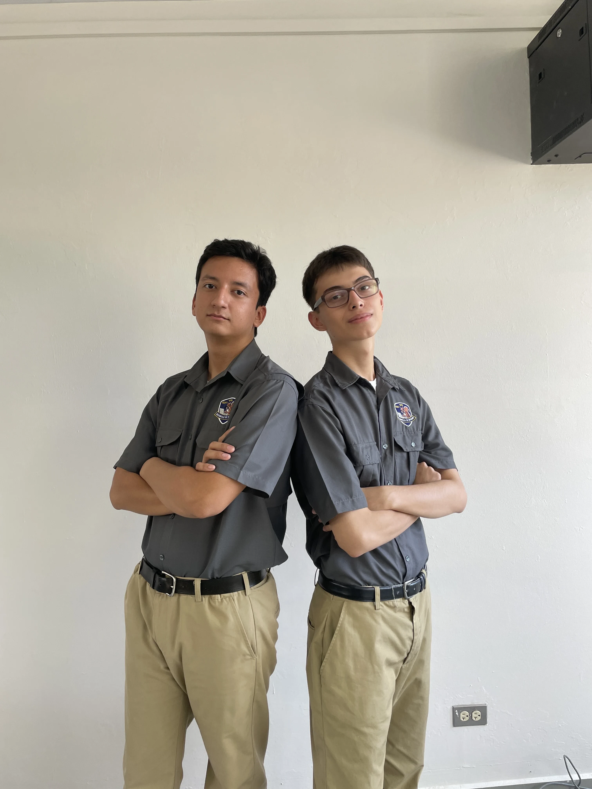
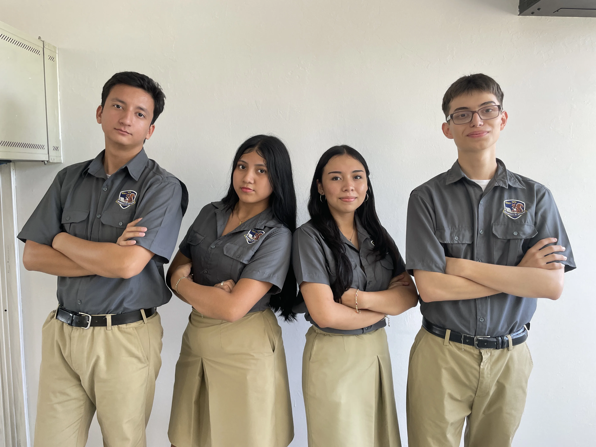
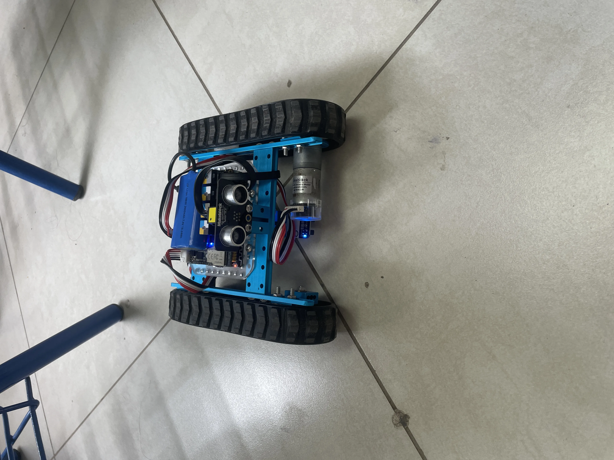
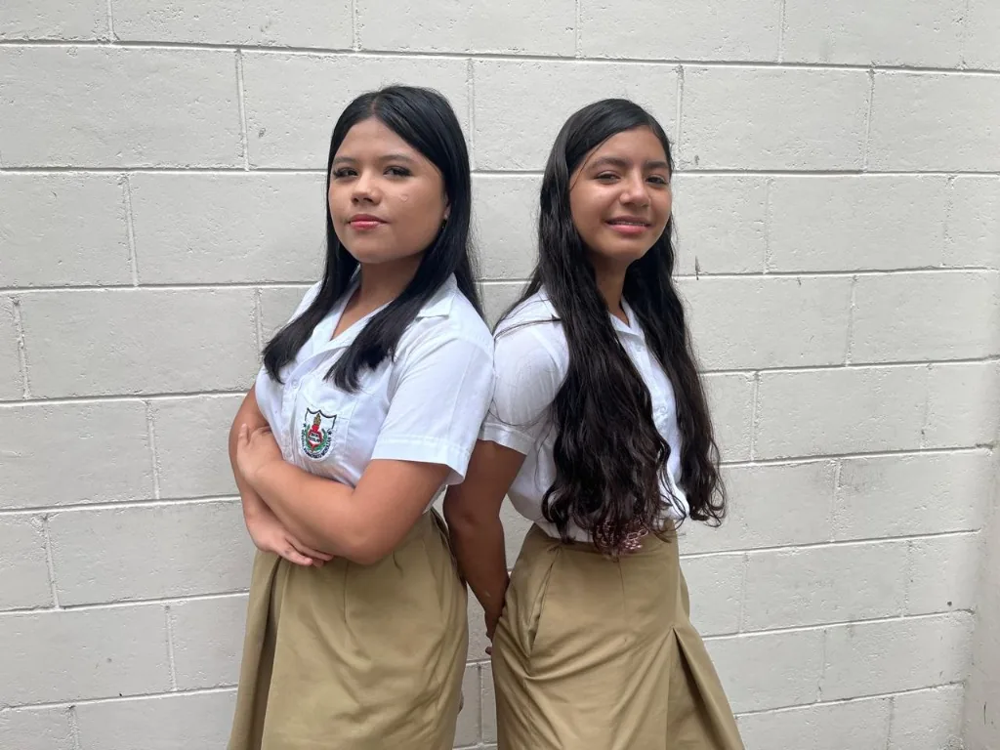

Bachillerato Técnico Vocacional
Formación especializada para desarrollar habilidades técnicas y académicas vinculadas con el mundo laboral.
01
Desarrollo de Software
Esta especialidad desarrolla conocimientos de programación, bases de datos y desarrollo web para diseñar soluciones tecnológicas. El estudiantado aprende a analizar necesidades, organizar información y construir proyectos paso a paso, fortaleciendo también la lógica y la resolución de problemas.
Como parte de su acercamiento práctico a la tecnología, cuenta con acceso a áreas de computación y experiencias relacionadas con robótica e impresión 3D. Así puede explorar distintas herramientas y conectar lo aprendido con proyectos concretos.
Galería de Desarrollo de Software



02
Asistente Contable
La formación aborda procesos financieros, registros contables, normativas tributarias y herramientas administrativas. A través de estos contenidos, el estudiantado fortalece la organización, la precisión y la responsabilidad necesarias para apoyar las tareas contables de una institución o empresa.
Galería de Asistente Contable
